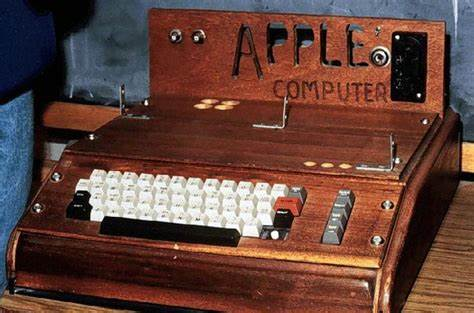
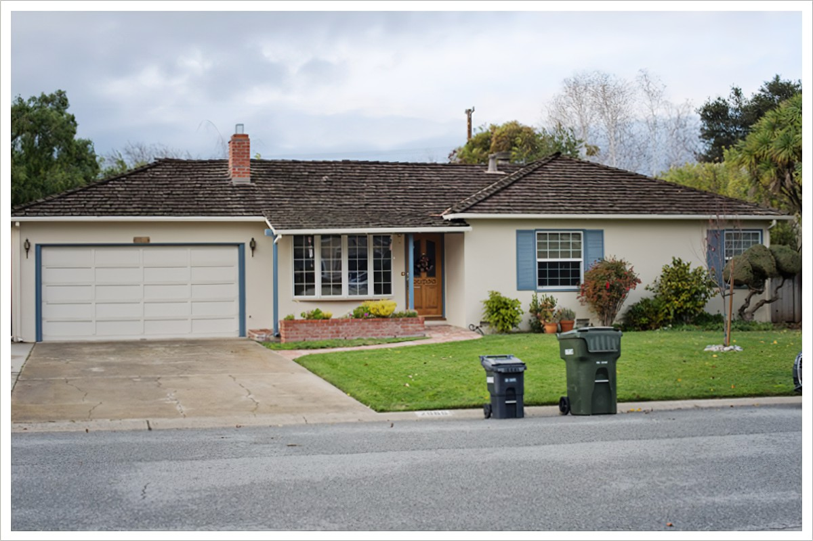

Steve Jobs had an alluring early life full of interesting facts. Born on February 24, 1955 in San Francisco, California, USA, he was raised by adoptive parents in Cupertino, California. His real parents were in university and they were Joanne Schieble and Syrian-born John Jandali. His step father Paul encouraged him to experiment with electronics in the garage, so he would get used to technology. He went to a local school in California, but later enrolled in Reed College located in Portland, Oregon. There was a calligraphy course that he took that was a crucial thing in the future of Apple, since this helped create more fonts in the Apple writing space. He worked as a video game designer at Atari, then went to India to study buddhism.In formal education he struggled and was a handful for teachers, but later he accomplished some amazing things.
Apple first began with Steve Jobs and Steve Wozinack on April 1, 1976 in Cupertino, California. In the begining they worked out of a garage which is not what you picture considering Apple now is worth more than $1 trillion dollars. Even though Apple is a major success now it wasn't always like it is now. At one point Steve Jobs actually got kicked out of the company, but eventually returned when the company was failing and brought it back up. This in turn would be a good choice for both Apple and Steve Jobs.They called their first logic board “The Apple 1” which was built in the Job's family garage. Money for the logic board was gathered by selling Job's volkswagen minibus and Wozniak's programmable calculator. He was the first entrepreneur to start the personal computer aspect of a business and with his encouragement Wozinek designed an improved model “the Apple 2” which was sleeker and enclosed in a plastic case.
The start of Apples sucess started in 1984 with the release of their first popular product the Macintosh or nowadays known as the Macbook. The only problem at that time was that a Macintosh would set you back $2500, which is the equvilent of around $6,267.42.They purchased NeXt a company at the time and put their software into all of there Macbooks, and eventually used it in the Ipod, Iphone, and Ipad. By releasing the Iphone on June 27, 2007 it opened the door to a new type of space in the cellphone market and adding touchscreens to that list of cellphones. This original Iphone was listed for $499 USD, this was a good price considering fliphones at the time cost arounf the $300 mark. Adding all of these ingredients together it can be seen how Apples has grown as a company.

